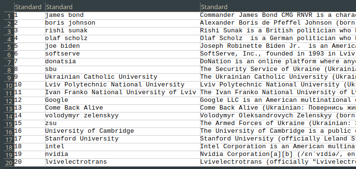
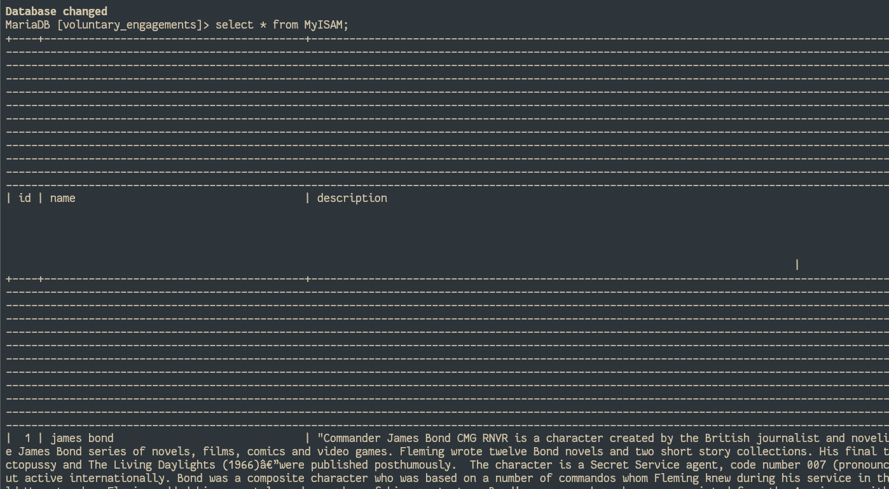
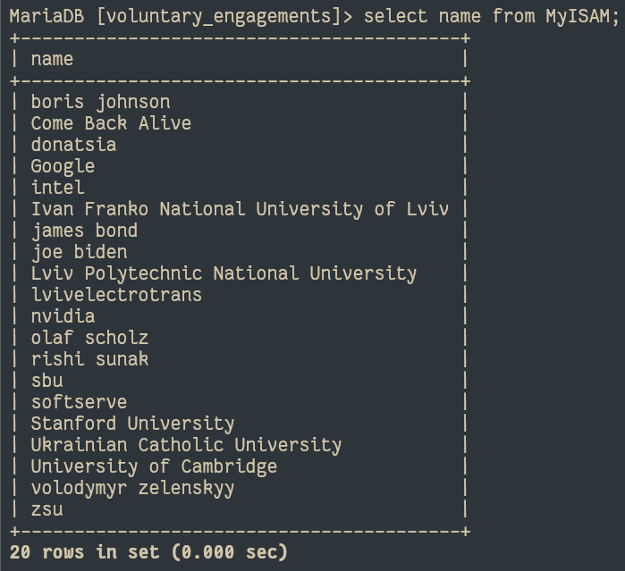

Homework 4 report
For this homework assignment, I investigated Full-Text Search in MySQL. The objective was to gain practical experience in implementing and using full-text search features within a database system. To achieve this, I will add a new MyISAM table with text attributes to store details about entity types and entities in the database and will do all the operations on it.
To view the code used, visit the GitHub repository.
Create an Additional MyISAM Table in Your DataBase
I will create a table with 2 columns: one for the name and one for the description.
However, my domain is about voluntary work, and it is not an easy task to find existing descriptions of voluntary work. Therefore, I will use employers and universities, as these are easier to find description about on the web.
As for the types, I will stick to the previous homeworks’ style and use varchar(50) for the name. For the description I will use text type, as it will contain lots of text. The id will be of type int(10).
I will also create 2 full-text indexes: one for the name and description together, and one for the description only. Sometimes it might be useful to also search through names, so I added the option to search both the name and description.
CREATE TABLE IF NOT EXISTS MyISAM (
id int(10) unsigned NOT NULL auto_increment,
name VARCHAR(50) NOT NULL,
description TEXT,
PRIMARY KEY (id),
FULLTEXT KEY name_description_ft (name, description),
FULLTEXT KEY description_ft (description)
) ENGINE=MyISAM DEFAULT CHARSET=utf8; {width=600px}
{width=600px}
Populate Your Additional Table with Relevant Textual Data
Just as in the previous homework, I used LOAD DATA to load these 2 columns from a csv:
LOAD DATA
INFILE "<path>/populate.csv"
INTO TABLE MyISAM
FIELDS TERMINATED BY '\t'
LINES TERMINATED BY '\n';
I got the following names from the previous homework:
james bond
boris johnson
rishi sunak
olaf scholz
joe biden
softserve
donatsia
sbu
Ukrainian Catholic University
Lviv Polytechnic National University
It seems that I will need some additional, in order to have 20 entries, so I will add some more names found on the web, related to employers or universities.
Then I found Wikipedia pages for everyone and added a part of them as descriptions:

{width=500px}After using the command above to load the data:

{width=600px}The texts are really long, so I can not show all of them at once. I will just show that there are really 20 entries:

{width=500px}All the values can be found at my GitHub repository in population.csv
Create the Stop List of the Words that should not be Searched
I will use the standard stop words list, which can be viewed here https://mariadb.com/kb/en/full-text-index-stopwords/
In addition to that, I will add some more words, that are just related to voluntary work, and can’t be really used to distinguish between entities:
voluntary
work
volunteer
volunteering
service
community
charity
donation
nonprofit
organization
philanthropy
volunteer
support
contribution
assistance
engagement
commitment
advocacy
participation
welfare
solidarity
I put everything into a stopwords.txt file and placed in into /var/lib/mysql/stopwords.txt. I then added the following line to the mysql configuration (part [mysqld]) to load the stopwords:
ft_stopword_file = '/var/lib/mysql/stopwords.txt'
In total, there are 564 words there.
After that, I restarted the mysql service using sudo systemctl restart mysql.
Create the Full-Text Index
As I followed the instructions given, I already indexed the name+description and just the description during the table creation stage.
However, as the stop words have been added, I will need to rebuild the indexes:
MariaDB [voluntary_engagements]> ALTER TABLE MyISAM ADD FULLTEXT KEY name_ft (name);
Query OK, 0 rows affected (0.632 sec)
Records: 0 Duplicates: 0 Warnings: 0
MariaDB [voluntary_engagements]> REPAIR TABLE MyISAM QUICK;
+------------------------------+--------+----------+----------+
| Table | Op | Msg_type | Msg_text |
+------------------------------+--------+----------+----------+
| voluntary_engagements.MyISAM | repair | status | OK |
+------------------------------+--------+----------+----------+
1 row in set (0.004 sec)However, I believe it may be useful to just index the name as well, as sometimes people might search for universities of particular cities, or catholic universities, or national universities.
Therefore, I will add another index for the name only:
MariaDB [voluntary_engagements]> ALTER TABLE MyISAM ADD FULLTEXT KEY name_ft (name);
Query OK, 0 rows affected (0.632 sec)
Records: 0 Duplicates: 0 Warnings: 0Elaborate Queries IN NATURAL LANGUAGE MODE
I will search for national university
Let’s first just search in the names:
The results are hard to screenshot, as they are large, so I will just paste the output:
MariaDB [voluntary_engagements]> SELECT *, MATCH(name) AGAINST('national university' IN NATURAL LANGUAGE MODE) AS relevance FROM MyISAM WHERE MATCH(name) AGAINST('national university' IN NATURAL LANGUAGE MODE) order by relevance limit 20;
+----+-----------------------------------------+-----------------------------------------------------------------------------------------------------------------------------------------------------------------------------------------------------------------------------------------------------------------------------------------------------------------------------------------------------------------------------------------------------------------------------------------------------------------------------------------------------------------------------------------------------------------------------------------------------------------------------------------------------------------------------------------------------------------------------------------------------------------------------------------------------------------------------------------------------------------------------------------------------------------------------------------------------------------------------------------------------------------------------------------------------------------------------------------------------------------------------------------------------------------------------------------------------------------------------------------------------------------------------------------------------------------------------------------------------------------------------------------------------------------------------------------------------------------------------------------------------------------------------------------------------------------------------------------------------------------------------------------------------------------------------------------------------------------------------------------------------------------------------------------------+--------------------+
| id | name | description | relevance |
+----+-----------------------------------------+-----------------------------------------------------------------------------------------------------------------------------------------------------------------------------------------------------------------------------------------------------------------------------------------------------------------------------------------------------------------------------------------------------------------------------------------------------------------------------------------------------------------------------------------------------------------------------------------------------------------------------------------------------------------------------------------------------------------------------------------------------------------------------------------------------------------------------------------------------------------------------------------------------------------------------------------------------------------------------------------------------------------------------------------------------------------------------------------------------------------------------------------------------------------------------------------------------------------------------------------------------------------------------------------------------------------------------------------------------------------------------------------------------------------------------------------------------------------------------------------------------------------------------------------------------------------------------------------------------------------------------------------------------------------------------------------------------------------------------------------------------------------------------------------------+--------------------+
| 9 | Ukrainian Catholic University | The Ukrainian Catholic University is a Catholic university in Lviv, Ukraine, affiliated with the Ukrainian Greek Catholic Church. The Ukrainian Catholic University (UCU) was the first Catholic university to open on the territory of the former Soviet Union.[1] The university has 2300 students studying in six faculties. Professional degrees are offered in journalism and business; doctoral degrees in history, theology and data science. For several years, including 2022[2] and 2023,[3] UCU's entering students had the highest External independent evaluation scores in the country. | 1.0619741678237915 |
| 16 | University of Cambridge | The University of Cambridge is a public collegiate research university in Cambridge, England. Founded in 1209, the University of Cambridge is the world's third-oldest university in continuous operation. The university's founding followed the arrival of scholars who left the University of Oxford for Cambridge after a dispute with local townspeople.[10][11] The two ancient English universities, although sometimes described as rivals, share many common features and are often jointly referred to as Oxbridge. In 1231, 22 years after its founding, the university was recognised with a royal charter, granted by King Henry III. The University of Cambridge includes 31 semi-autonomous constituent colleges and over 150 academic departments, faculties, and other institutions organised into six schools. The largest department is Cambridge University Press & Assessment, which has £1 billion of annual revenue and reaches 100 million learners.[12] All of the colleges are self-governing institutions within the university, managing their own personnel and policies, and all students are required to have a college affiliation within the university. Undergraduate teaching at Cambridge is centred on weekly small-group supervisions in the colleges with lectures, seminars, laboratory work, and occasionally further supervision provided by the central university faculties and departments | 1.0739123821258545 |
| 17 | Stanford University | "Stanford University (officially Leland Stanford Junior University) is a private research university in Stanford, California. It was founded in 1885 by Leland Stanford—a railroad magnate who served as the eighth governor of and then-incumbent senator from California—and his wife, Jane, in memory of their only child, Leland Jr.[2] Stanford has an 8,180-acre (3,310-hectare) campus, among the largest in the nation.[6] It is also frequently ranked amongst the most prestigious and highly respected universities in the world.[13][14] The university is organized around seven schools of study on the same campus. It also houses the Hoover Institution, a public policy think tank. Students compete in 36 varsity sports, and the university is one of two private institutions in the Pac-12 Conference. Stanford has won 131 NCAA team championships,[15] more than any other university, and was awarded the NACDA Directors' Cup for 25 consecutive years, beginning in 1994.[16] Stanford students and alumni have also won over 296 Olympic medals (including 150 gold).[17] The university admitted its first students in 1891,[2][3] opening as a coeducational and non-denominational institution. It struggled financially after Leland's death in 1893 and again after much of the campus was damaged by the 1906 San Francisco earthquake.[18] Following World War II, Frederick Terman, the 2nd university provost, inspired and supported both faculty and graduates entrepreneurialism to build a self-sufficient local industry (Silicon Valley).[19] In 1951, Stanford established Stanford Research Park in Palo Alto which is the world's first university research park. It has been called ""the epicenter of Silicon Valley"".[20] " | 1.0739123821258545 |
| 11 | Ivan Franko National University of Lviv | The Ivan Franko National University of Lviv is a public university in Lviv, Ukraine. The university is the oldest institution[citation needed] of higher learning in continuous operation in present-day Ukraine, dating from 1661 when John II Casimir, King of Poland, granted it its first royal charter. Over the centuries, it has undergone various transformations, suspensions, and name changes that have reflected the geopolitical complexities of this part of Europe. The present institution can be dated to 1940. It is located in the historic city of Lviv in Lviv Oblast of Western Ukraine. | 3.1166305541992188 |
| 10 | Lviv Polytechnic National University | "Lviv Polytechnic National University is a public university in Lviv, Ukraine. It was founded in 1816.[2] The National University ""Lviv Polytechnic"" includes: 16 educational institutes (as well as the Institute of distance learning and the International Institute of Education, Culture and Relations with the Diaspora); Research Centre Scientific and technical library; 8 colleges, two gymnasiums; 34 teaching and laboratory buildings; 12 dormitories; 3 sports and health camps for students and teachers; Publishing house of Lviv Polytechnic National University; People's House ""Prosvita (Lviv Polytechnic)""; Design and Construction Association ""Polytechnic""; a geodetic polygon and an astronomical-geodesic laboratory. The university has more than 35,000 students and extramural students.[7] The training of specialists is carried out in 64 bachelor's areas and 124 specialities, of which 123 are master's level. The teaching process is provided by a teaching staff of more than 2,200 people, of whom more than 320 are doctors of sciences and more than 1200 are associate professors, PhD. The educational process involves scientists from scientific institutions of the National Academy of Sciences of Ukraine, production enterprises and design institutes. " | 3.150895595550537 |
+----+-----------------------------------------+-----------------------------------------------------------------------------------------------------------------------------------------------------------------------------------------------------------------------------------------------------------------------------------------------------------------------------------------------------------------------------------------------------------------------------------------------------------------------------------------------------------------------------------------------------------------------------------------------------------------------------------------------------------------------------------------------------------------------------------------------------------------------------------------------------------------------------------------------------------------------------------------------------------------------------------------------------------------------------------------------------------------------------------------------------------------------------------------------------------------------------------------------------------------------------------------------------------------------------------------------------------------------------------------------------------------------------------------------------------------------------------------------------------------------------------------------------------------------------------------------------------------------------------------------------------------------------------------------------------------------------------------------------------------------------------------------------------------------------------------------------------------------------------------------+--------------------+
5 rows in set (0.003 sec)
Or, if just select the names and the relevance:
MariaDB [voluntary_engagements]> SELECT name, MATCH(name) AGAINST('national university' IN NATURAL LANGUAGE MODE) AS relevance FROM MyISAM WHERE MATCH(name) AGAINST('national university' IN NATURAL LANGUAGE MODE) order by relevance limit 20;
+-----------------------------------------+--------------------+
| name | relevance |
+-----------------------------------------+--------------------+
| Ukrainian Catholic University | 1.0619741678237915 |
| Stanford University | 1.0739123821258545 |
| University of Cambridge | 1.0739123821258545 |
| Ivan Franko National University of Lviv | 3.1166305541992188 |
| Lviv Polytechnic National University | 3.150895595550537 |
+-----------------------------------------+--------------------+
Next times I will just show the name and the relevance, as the descriptions are too long.
As we can see, the highest relevance is for the Lviv Polytechnic National University and Ivan Franko National University of Lviv with the relevance of 3.15 and 3.11 respectively. This is not unexpected, as they both have “university” and “national” in their names. Then, there are other universities: Stanford, Cambridge and Ukrainian Catholic. However, their relevance is significantly lower (close to 1), as they only have the word “university” in them.
If we search through the descriptions as well as names, though, we will get the following:
MariaDB [voluntary_engagements]> SELECT name, MATCH(name, description) AGAINST('national university' IN NATURAL LANGUAGE MODE) AS relevance FROM MyISAM WHERE MATCH(name, description) AGAINST('national university' IN NATURAL LANGUAGE MODE) order by relevance limit 20;
+-----------------------------------------+---------------------+
| name | relevance |
+-----------------------------------------+---------------------+
| Google | 0.06345705687999725 |
| joe biden | 0.14475715160369873 |
| rishi sunak | 0.16355571150779724 |
| Stanford University | 0.27212074398994446 |
| Ukrainian Catholic University | 0.32200780510902405 |
| University of Cambridge | 0.33514204621315 |
| zsu | 0.5274216532707214 |
| volodymyr zelenskyy | 0.5654633641242981 |
| Ivan Franko National University of Lviv | 1.5071724653244019 |
| Lviv Polytechnic National University | 1.8255754709243774 |
+-----------------------------------------+---------------------+
Here we have some interesting results: volodymyr zelenskyy and zsu are higher than even Stanford University. However, if we look into the contents of the description, we will see “he obtained a degree in law from the Kyiv National Economic University” for Zelenskyy and “National guard” for zsu.
Ivan Franko National University of Lviv and Lviv Polytechnic National University are still the highest, as they have these words both in their names and in their descriptions.
I will search for What are some places for studying in Lviv?
As where is a part of stop words and can, I and in are shorter than 3 characters, the search should only take into acount study and Lviv.
MariaDB [voluntary_engagements]> SELECT name, MATCH(name, description) AGAINST('What are some places for studying in Lviv?' IN NATURAL LANGUAGE MODE) AS relevance FROM MyISAM WHERE MATCH(name, description) AGAINST('What are some places for studying in Lviv?' IN NATURAL LANGUAGE MODE) order by relevance limit 20;
+-----------------------------------------+--------------------+
| name | relevance |
+-----------------------------------------+--------------------+
| softserve | 1.0755177736282349 |
| lvivelectrotrans | 1.1397796869277954 |
| Lviv Polytechnic National University | 1.3402560949325562 |
| Ivan Franko National University of Lviv | 1.5288786888122559 |
| Ukrainian Catholic University | 2.3238799571990967 |
+-----------------------------------------+--------------------+
5 rows in set (0.001 sec)
It’s no wonder that Ukrainian Catholic University is the best place to study in Lviv. However, the search also returned Lviv Polytechnic National University and Ivan Franko National University of Lviv, which are also good places that match the search query. Additionally, the search returned softserve and lvivelectrotrans, which are not places to study at, but they contain the word Lviv in them, so they still were found, but with least relevance.
I will search for United Kingdom politician
MariaDB [voluntary_engagements]> SELECT name, MATCH(name, description) AGAINST('United Kingdom politician' IN NATURAL LANGUAGE MODE) AS relevance FROM MyISAM WHERE MATCH(name, description) AGAINST('United Kingdom politician' IN NATURAL LANGUAGE MODE) order by relevance limit 20;
+---------------------+---------------------+
| name | relevance |
+---------------------+---------------------+
| volodymyr zelenskyy | 0.3914547264575958 |
| intel | 0.45362427830696106 |
| olaf scholz | 0.46390098333358765 |
| softserve | 0.6352181434631348 |
| joe biden | 1.2605669498443604 |
| boris johnson | 1.724047064781189 |
| rishi sunak | 2.1153950691223145 |
+---------------------+---------------------+
Understandably, the first two candidates are rishi sunak and boris johnson, as they are the only UK politicians in the list. joe biden is also not a wonder, as he is also a politician in a “United” country, which just happens to be not a kingdom. Lastly, there are softserve, olaf sholz and intel, which are all connected to United States, and volodymyr zelenskyy, connected to being a politician. These last four candidates have one word relevant.
Elaborate Queries IN NATURAL LANGUAGE MODE WITH QUERY EXPANSION
To compare with the previous results, I will use the same queries, but with query expansion.
national university
MariaDB [voluntary_engagements]> SELECT name, MATCH(name, description) AGAINST('national university' IN NATURAL LANGUAGE MODE WITH QUERY EXPANSION) AS relevance FROM MyISAM WHERE MATCH(name, description) AGAINST('national university' IN NATURAL LANGUAGE MODE WITH QUERY EXPANSION) order by relevance limit 20;
+-----------------------------------------+--------------------+
| name | relevance |
+-----------------------------------------+--------------------+
| donatsia | 8.256771087646484 |
| james bond | 20.496623992919922 |
| intel | 47.14778137207031 |
| lvivelectrotrans | 49.37466049194336 |
| Come Back Alive | 52.9117431640625 |
| olaf scholz | 54.1308708190918 |
| nvidia | 54.24763870239258 |
| softserve | 62.604801177978516 |
| boris johnson | 66.92340850830078 |
| sbu | 81.62804412841797 |
| Ukrainian Catholic University | 144.16700744628906 |
| Ivan Franko National University of Lviv | 163.9254150390625 |
| rishi sunak | 168.5049591064453 |
| joe biden | 200.59136962890625 |
| University of Cambridge | 202.177734375 |
| Stanford University | 207.89285278320312 |
| Lviv Polytechnic National University | 214.1075439453125 |
| volodymyr zelenskyy | 222.1399688720703 |
| zsu | 247.74658203125 |
| Google | 254.54222106933594 |
+-----------------------------------------+--------------------+
20 rows in set (0.005 sec)
National universities are still among the top results, but now other entries, such as Google or zsu are present. Due to the nature of WITH QUERY EXPANSION, it is hard to know for sure, what caused the shift. However, Google’s and zsu’s descriptions are one the longest, and I suspect that due to that they had many similar words that are not connected to national universities.
On another note, there appeared many more results. This probably happened due to other words from query expansion coinciding.
What are some places for studying in Lviv?
MariaDB [voluntary_engagements]> SELECT name, MATCH(name, description) AGAINST('What are some places for studying in Lviv?' IN NATURAL LANGUAGE MODE WITH QUERY EXPANSION) AS relevance FROM MyISAM WHERE MATCH(name, description) AGAINST('What are some places for studying in Lviv?' IN NATURAL LANGUAGE MODE WITH QUERY EXPANSION) order by relevance limit 20;
+-----------------------------------------+--------------------+
| name | relevance |
+-----------------------------------------+--------------------+
| james bond | 1.247643232345581 |
| olaf scholz | 5.8884124755859375 |
| rishi sunak | 6.727415084838867 |
| boris johnson | 7.28841495513916 |
| joe biden | 9.139566421508789 |
| sbu | 10.87734603881836 |
| zsu | 13.361390113830566 |
| Come Back Alive | 16.078025817871094 |
| volodymyr zelenskyy | 17.6501407623291 |
| intel | 17.773218154907227 |
| Stanford University | 18.7851505279541 |
| nvidia | 20.436994552612305 |
| Google | 21.18455696105957 |
| University of Cambridge | 33.39824676513672 |
| softserve | 109.14557647705078 |
| Ukrainian Catholic University | 123.90084838867188 |
| Ivan Franko National University of Lviv | 144.10848999023438 |
| lvivelectrotrans | 166.6208953857422 |
| Lviv Polytechnic National University | 189.8301544189453 |
+-----------------------------------------+--------------------+
This time the result was pretty much the same. The Ukrainian Catholic University, however, now was placed on the fourth place, probably due to it having one of the smallest descriptions and matching fewer words unrelated to places to study at Lviv.
United Kingdom politician
MariaDB [voluntary_engagements]> SELECT name, MATCH(name, description) AGAINST('United Kingdom politician' IN NATURAL LANGUAGE MODE WITH QUERY EXPANSION) AS relevance FROM MyISAM WHERE MATCH(name, description) AGAINST('United Kingdom politician' IN NATURAL LANGUAGE MODE WITH QUERY EXPANSION) order by relevance limit 20;
+-----------------------------------------+--------------------+
| name | relevance |
+-----------------------------------------+--------------------+
| Come Back Alive | 7.825541973114014 |
| donatsia | 8.920992851257324 |
| Ivan Franko National University of Lviv | 11.992758750915527 |
| Lviv Polytechnic National University | 15.921268463134766 |
| Stanford University | 16.820152282714844 |
| University of Cambridge | 17.30542755126953 |
| Ukrainian Catholic University | 21.052181243896484 |
| james bond | 21.22876739501953 |
| zsu | 24.618087768554688 |
| lvivelectrotrans | 24.775684356689453 |
| sbu | 25.14759063720703 |
| Google | 39.191123962402344 |
| nvidia | 48.22808074951172 |
| softserve | 100.10355377197266 |
| intel | 198.291015625 |
| rishi sunak | 201.63619995117188 |
| volodymyr zelenskyy | 221.20428466796875 |
| joe biden | 227.1234588623047 |
| olaf scholz | 250.04246520996094 |
| boris johnson | 256.80108642578125 |
+-----------------------------------------+--------------------+
The results are close again, but this time rishi sunak was lower than expected. However, his description is not particularly smaller, so I can not explain the difference just based on that. I suspect that his description did not contain many politics-related words, and when using expanded queries, the search gave more relevance to other politicians, which have more politics-relaed words similar to the ones of boris johnson.
Elaborate Queries IN BOOLEAN MODE
Search for technology companies, preferably in Lviv
MariaDB [voluntary_engagements]> SELECT name, MATCH(name, description) AGAINST('+technology +company >Lviv' IN BOOLEAN MODE) AS relevance FROM MyISAM WHERE MATCH(name, description) AGAINST('+technology +company >Lviv' IN BOOLEAN MODE) order by relevance limit 20;
+-----------+-----------+
| name | relevance |
+-----------+-----------+
| intel | 1 |
| Google | 1 |
| nvidia | 1 |
| softserve | 1.5 |
+-----------+-----------+
Indeed, “SoftServe, Inc., founded in 1993 in Lviv, Ukraine, is a technology company…” is the closest. However, nvidia (“…is an American multinational corporation and technology company…”), Google (“Google LLC is an American multinational corporation and technology company…”) and intel (“Intel Corporation is an American multinational corporation and technology company…”) have “technology” and “company” in their description too.
Search for all that contain words that start with “scholar”
MariaDB [voluntary_engagements]> SELECT name, MATCH(name, description) AGAINST('scholar*' IN BOOLEAN MODE) AS relevance FROM MyISAM WHERE MATCH(name, description) AGAINST('scholar*' IN BOOLEAN MODE) order by relevance limit 20;
+-------------------------+-----------+
| name | relevance |
+-------------------------+-----------+
| University of Cambridge | 1 |
| donatsia | 1 |
| rishi sunak | 1 |
+-------------------------+-----------+
If we check, we will find that University of Cambridge contains “The university’s founding followed the arrival of scholars…”, donatsia contains “…anyone can subscribe with any amount, and suppport scholarships.” and rishi sunak “…and earned an MBA from Stanford University in California as a Fulbright Scholar”.
Search for everything American, but preferably not a company
MariaDB [voluntary_engagements]> SELECT name, MATCH(name, description) AGAINST('american ~company' IN BOOLEAN MODE) AS relevance FROM MyISAM WHERE MATCH(name, description) AGAINST('american ~company' IN BOOLEAN MODE) order by relevance limit 20;
+------------+-----------+
| name | relevance |
+------------+-----------+
| Google | 0.5 |
| nvidia | 0.5 |
| intel | 0.5 |
| joe biden | 1 |
| james bond | 1 |
+------------+-----------+
We get joe biden (“Joseph Robinette Biden Jr. is an American politician…”) and james bond (“…in which Bond was depicted as an American agent”) the highest, as they contain “American” and do not have “company”. They are followed by Google (”…American multinational corporation and technology company…”), nvidia (“is an American multinational corporation and technology company…”) and intel (“Intel Corporation is an American multinational corporation and technology company…”) as they contain “American”, but also “company”.
Conclusion
In this homework assignment, I created a table named MyISAM in the MySQL database and populated it with 20 entries containing names and descriptions of various employers and universities, as in the previous homework. The entries were sourced from previous homework assignments and online resources.
I performed three different types of searches on the MyISAM table:
- Natural Language Mode: This mode allows for searches using natural language queries. The searches performed in this mode included “national university,” “What are some places for studying in Lviv?”, and “United Kingdom politician.” Natural language mode analyzes the query and retrieves relevant results based on the words and their relevance to the data in the table.
- Natural Language Mode with Query Expansion: Similar to the natural language mode, but it additionally expands the query by incorporating related words and concepts. The queries used with query expansion were the same as in natural language mode: “national university,” “What are some places for studying in Lviv?”, and “United Kingdom politician.” Query expansion works by analyzing the initial query and finding related terms from the indexed data, then adding those related terms to the search query. This can sometimes provide more comprehensive results but may also introduce irrelevant entries.
- Boolean Mode: This mode enables searches using boolean operators like + (must include), - (must exclude), > (prefer if present), and < (prefer if absent). The searches performed in this mode included “+technology +company >Lviv” (technology companies, preferably in Lviv), “scholar*” (entries containing words starting with “scholar”), and “american ~company” (American entities, but preferably not companies).
The MyISAM storage engine in MySQL, with its built-in full-text search capabilities, can be pretty useful for performing straightforward searches on textual data. While it may not be as advanced as dedicated search engines, it can be a helpful tool for basic text analysis and retrieval tasks, especially in scenarios where the data is stored within a MySQL database.